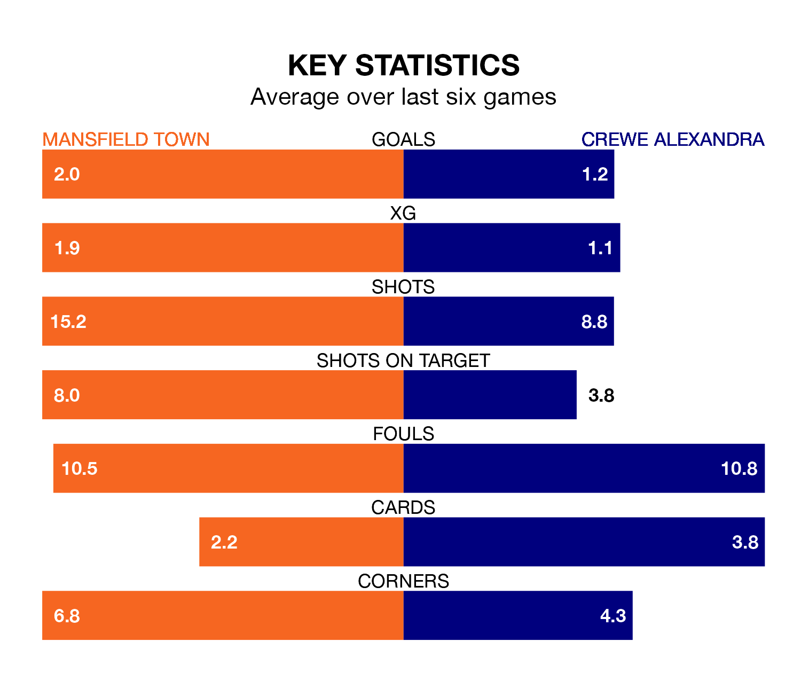

Crewe Alexandra face a challenge to maintain their high-scoring form away against a tight Mansfield Town defence on Saturday.
With 47 goals in 25 games, Crewe are the joint-fourth-highest scorers in EFL League Two ahead of the 3pm kick-off at the One Call Stadium.
They face a Stags side who have scored 44 in 24 matches, but conceded only 19 goals, putting them top of the league's tightest defences.
Mansfield are second in the table after 24 games, of which they have won 13 and drawn 10, earning 49 points.
Crewe are four places behind Town in sixth, with 11 wins and eight draws putting them on 41 points.
In Christy Pym, the Stags can rely on one of the league's safest pair of hands. He has kept 10 clean sheets in his 24 appearances this season, and no 'keeper has prevented the opposition scoring more often in EFL League Two.
In the Railwaymen's net, Harvey Davies has four clean sheets in 21 games. He has conceded a goal every 63 minutes, 90% more often than the 120 minutes between goals for Pym.
The hosts are in good form in EFL League Two, with four wins and two draws from their last six games.
With a win and two draws over that period, the away side's form is much worse – they have taken five points from 18, compared to Mansfield's 14.
In the last five years, Mansfield and Crewe have played each other on six occasions. They won one each, and they drew four times.
On average, the Stags scored 1.3 goals and the Railwaymen 1.3 in those matches.
Their last meeting was on August 5, when they played out a 2-2 draw.
Mansfield's last match was on Monday, a 2-0 win against Stockport County, with Davis Keillor-Dunn and George Maris getting the goals for the Stags.
Crewe beat Bradford City 1-0 last time out, also on Monday, with Chris Long on the scoresheet.
Updated: 10:36, 03/01/24